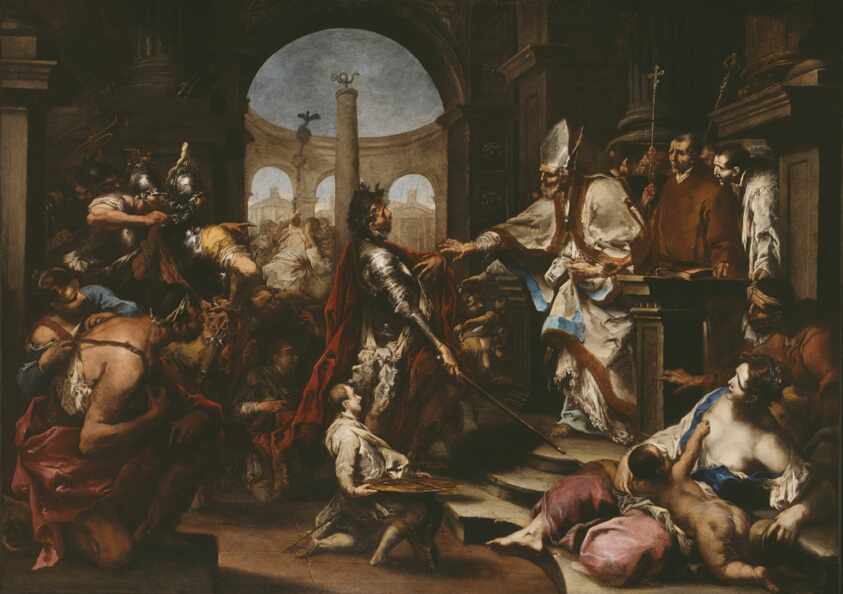

1 Corinthians 5 — The Mister Translation

A museum record of the same event as the Rubens below, and the closer picture of it: the figures crowded on the steps in the foreground point to the violence that the exclusion answers. The church shuts its door on the powerful man who has done the wrong, until he repents. That is what chapter 5 asks the congregation to do.
Ambrose, bishop of Milan, kept the Emperor Theodosius out of the church until he had done penance for the massacre at Thessalonica (c. AD 390). The story is not in 1 Corinthians, and the painting shows the church as a place that can refuse entry. That is the discipline chapter 5 asks for: the community deciding who may stand among it.

“It is commonly reported.” Holōs is an adverb of the whole, and akoueitai, is reported, is the verb of a rumour that has arrived. Paul has heard it, from people he names in 1:11, and says it is an immorality not even found among the nations. The general word for the offence is porneia, sexual immorality (porneia). The shelf is consistent on the noun: the KJV and ASV say “fornication,” and the NWT 1984 says “fornication” too.
“That a man has his father’s wife.” The Greek is gynaika tina tou patros echein, to have a certain wife of the father. The verb echein with a wife is the idiom for living with her, and the law names the same act in two places: Deuteronomy 27:20 curses the one who lies with his father’s wife, and Leviticus 18:8 forbids uncovering the father’s wife. Paul does not name the man, and does not say whether the woman is the father’s widow or still his wife; the Greek is open on that. The ASV has “one of you hath his father’s wife,” which brings the man inside the congregation, and the KJV “that one should have his father’s wife.” The NWT 1984 brackets the words it supplies, “a wife a certain [man] has of [his] father,” and the NWT 2013 has “a man living with his father’s wife,” which is the clearest of the three about the arrangement.
“And you are puffed up.” Pephysiōmenoi is the perfect participle of the verb of 4:6, 4:18 and 4:19, where Paul has been accusing the factions of pride. Now the pride is not a faction’s slogan but the congregation’s stance toward the case. The shelf keeps the same word where it can: the KJV “ye are puffed up,” the ASV “ye are puffed up,” and the NWT “puffed up.” The NWT 2013 moves to “proud of it,” which adds the object and gives up the swelling image.
“Should you not rather have mourned.” Epenthēsate, mourned, is the verb of grief, and the sentence is a question that expects the answer yes. The result clause, hina arthē ek mesou hymōn, so that he would be taken out from your midst, uses the verb airō, to lift up and take away. That is the verb and the image of the removal in verse 13, where the same community is told to remove the wicked one from among itself.
The shelf: the RV 1909 reads “that someone has his father’s wife”, the RV60 “someone has his father’s wife”, and the NVI “one of you has as his wife his father’s wife.” In verse 2 the RV 1909 keeps “you are puffed up”, the RV60 says “you are conceited”, and the NVI “you are proud.”
“Though absent in body and present in spirit.” Apōn tō sōmati, parōn de tō pneumati, the contrast of body and spirit, where the spirit is the part of Paul that is in the room. The judgment is made as though he were present (hōs parōn), and the perfect kekrika, I have judged, says the decision stands. The KJV has “as absent in body, but present in spirit, have judged already, as though I were present.” The ASV is close: “being absent in body but present in spirit, have already as though I were present judged him.” The NWT 2013 has “I have already judged the man who has done this, as if I were actually with you.”
“In the name of our Lord Jesus.” En tō onomati tou kyriou hēmōn Iēsou. The gathering is the assembly (synachthentōn hymōn, you being gathered together), and the act is done in the name of the Lord. The referent of kyrios is Jesus here, since the sentence names him as “our Lord Jesus” in the same breath, so the translation keeps “Lord.” The power is dynamis (dynamis). The KJV adds “Christ” after “Jesus” in both places, which the Greek text here does not print. The NWT 1984 has “our Lord Jesus” in both places, and the ASV the same.
“Hand such a man over to Satan.” Paradounai, to hand over, is the verb for a formal delivery, the same verb of the handing over appears in 1 Timothy 1:20, where two men are handed over to Satan. Satanas is the adversary (satan). The purpose is eis olethron tēs sarkos, for the ruin of the flesh (olethros), and it is followed by hina to pneuma sōthē, so that the spirit may be saved. Commentators divide over what the ruin is. One reading puts it on the body, an affliction that brings the man to his senses; the other reads “flesh” as the old life that must be destroyed so that the spirit is saved. The Greek does not settle it, so the translation keeps “ruin” and “flesh” and leaves the reading open. The KJV and ASV keep “destruction of the flesh,” and the NWT 2013 has “you must hand such a man over to Satan for the destruction of the flesh, so that the spirit may be saved in the day of the Lord.”
“In the day of the Lord.” The day is the one of 1:8 and 3:13, when each work is tested by fire. The Lord of the day is Jesus, as in verse 4. The ASV prints “the day of the Lord Jesus,” making the referent explicit.
In verse 4 the RV60 reads “with the power of our Lord Jesus Christ”, the RV 1909 “with the faculty of our Lord Jesus Christ”, and the NVI “with his power.” In verse 5 the RV60 reads “for the destruction of the flesh” and the RV 1909 “for the death of the flesh”; the NVI “for the destruction of his flesh.”
“Your boasting is not good.” Kauchēma is the noun of what is boasted of, and it comes from kauchaomai, the verb of 1:31, 3:21 and 4:7. The boasting here is the congregation’s pride in its own tolerance. The KJV and ASV have “glorying,” and the NWT “boasting.”
“A little leaven leavens the whole lump.” Zymē, leaven, is a piece of old dough kept back to start the next batch, and phyrama is the lump of dough. The verb zymoi makes the sentence a small proverb about spread (zymē). Paul repeats it in Galatians 5:9 (not yet on these pages), and the Gospel of Mark uses the same image for the teaching of the Pharisees and of Herod (Mark 8:15). The KJV has “a little leaven leaveneth the whole lump,” and the NWT 2013 “a little leaven ferments the whole batch of dough.” The translation keeps “lump” because the Greek word is the same one used for the new lump in verse 7.
“Clear out the old leaven.” Ekkatharate, clear out, is the verb of the clean-out before the feast. Exodus requires the removal of leaven from every house for the seven days (Exodus 12:15). Paul makes the congregation the house. Kathōs este azymoi, just as you are unleavened, is a statement of what they already are, and the translation keeps it as a statement. The KJV has “as ye are unleavened,” and the NWT 2013 “inasmuch as you are free from ferment.”
“Our Passover, Christ, has been sacrificed.” To pascha hēmōn, our Passover, names the feast and the lamb in one word, and the verb ethythē is the verb for a sacrifice, slaughtered on an altar. Paul identifies the Christ with the lamb of Exodus 12, and makes him the reason the congregation can keep the feast. The shelf keeps the word and the sentence: the KJV “For even Christ our passover is sacrificed for us,” the ASV “For our passover also hath been sacrificed, even Christ,” the NWT 2013 “Christ our Passover lamb has been sacrificed.” The NWT 2013 supplies “lamb,” which is a reasonable reading of the feast, not an addition the Greek lacks in meaning.
“Let us keep the feast.” Heortazōmen, to keep a feast, and the feast is the week of unleavened bread that follows the Passover. Azymois, unleavened, is the plural of the adjective, and eilikrineias, sincerity, is a word for what is tested in the light and comes through unmixed. The NWT 1984 has “unfermented cakes of sincerity and truth,” and the KJV “unleavened bread of sincerity and truth.” The translation keeps “unleavened bread” for azymois, since the feast is named after the bread.
In verse 6 the NVI reads “They are wrong to boast.” In verse 7 the RV 1909 reads “Purge out therefore the old leaven”, the RV60 “Cleanse out, therefore, the old leaven”, and the NVI “Get rid of the old yeast”; the RV60 has “was sacrificed for us”, the NVI “has been sacrificed.” In verse 8 the RV 1909 reads “with the unleavened bread of sincerity and truth” and the RV60 “with unleavened bread, of sincerity and truth.”
“I wrote to you in my letter.” En tē epistolē, in the letter, refers to an earlier letter from Paul that is not among the surviving letters of the New Testament. The verb synanamignysthai, to mix in company with, is the verb for keeping company, and the instruction is that the congregation not associate with the sexually immoral. The translation keeps “mix in company with,” because the verb is about being mixed up with a group, not about avoiding a person in a room. The KJV has “not to company with fornicators,” and the NWT 2013 “stop keeping company with sexually immoral people.”
“Not entirely the fornicators of this world.” Paul corrects a reading of his earlier instruction. He did not mean that the congregation should cut itself off from the immoral people of the world. Ou pantōs, not altogether, is the limit, and the sentence finishes with the consequence: epei ōpheilete ara ek tou kosmou exelthein, since you would then have to go out of the world. The KJV has “Yet not altogether with the fornicators of this world,” and the NWT 1984 “not [meaning] entirely with the fornicators of this world.”
“The greedy and the extortioners.” The list runs from pleonektais, the greedy, to harpax, a grabber or extortioner, with the idolaters, the reviler, and the drunkard added in verse 11 (harpax). The ASV has “covetous, or an idolater, or a reviler, or a drunkard, or an extortioner,” and the NWT 1984 has “reviler” and “extortioner.” The translation keeps “reviler” for loidoros, the man who abuses others with words.
“Not even to eat with such a person.” Synesthiein, to eat together, is the verb for sharing a table, and the rule goes to the table of the assembly, where the meal is shared. The ASV has “with such a one no, not to eat,” and the KJV “with such an one no not to eat.” The rule says what the community does, and it applies to a man called a brother, so the question is one of membership and not of the wider world.
The RV60 reads “that you not associate with fornicators”, the RV 1909 “that you not involve yourselves with fornicators”, and the NVI “not to associate with people who are immoral.” In verse 10 the RV60 reads “or with the covetous, or the robbers”; the NVI “neither the greedy, swindlers, nor idolaters.” In verse 11 the RV60 reads “with anyone who, calling himself a brother, is a fornicator”, and the NVI “is immoral or greedy, an idolater, a slanderer, a drunkard or a swindler.”
“Those outside.” Tous exō, those outside, is the term for those who are not in the congregation, and it is the same phrase that Mark uses for the people who hear the parables without understanding (Mark 4:11). Paul says he has no business judging them. The KJV has “For what have I to do to judge them also that are without?” and the ASV “For what have I to do with judging them that are without?” The NWT 1984 says “For what do I have to do with judging those outside?”
“Those inside.” Tous esō, those inside, is the community. The question is an accusation: you are the ones who judge the insiders, and so the judgment of the case belongs to you. Krinete, you judge, is the same verb as in verse 3.
“God judges those outside.” The division is clear: God judges the outside, and the congregation judges the inside. The command that follows, exarate ton ponēron ex hymōn autōn, remove the wicked one from among yourselves, is the refrain of Deuteronomy’s law against those who do evil in Israel: Deuteronomy 17:7 gives the English “burn out the evil from your midst.” Paul uses the plural of the command, so the community itself is the body that removes. The KJV has “Therefore put away from among yourselves that wicked person,” the ASV “Put away the wicked man from among yourselves,” and the NWT 2013 “Remove the wicked person from among yourselves.”
“The wicked one.” Ton ponēron is the wicked one, in the masculine singular, the man of verse 1. The translation keeps the singular, so that the command is about one person and the community is told to act on him.
Patterns worth carrying forward
The RV60 reads “what have I to do to judge those outside?”, and the NVI “Is it my place to judge outsiders?” In verse 13 the RV60 reads “Remove therefore that wicked person from among you”, and the NVI “Expel the wicked person from among you.”
Where this translation keeps the exact words: “puffed up” for physioō at 5:2, as at 4:6, 4:18 and 4:19; “boasting” for kauchēma, from the verb of 1:31, 3:21 and 4:7; “leaven” for zymē and “lump” for phyrama, which are the same words in both halves of the proverb; “those outside” and “those inside” for exō and esō; “reviler” for loidoros.
Echoes paid. The judging of 4:3–5, now made by Paul as though present (5:3); the power of 4:19–20, carried into the assembly as dynamis in verse 4; the day of 1:8 and 3:13, which is the day of the Lord in verse 5; the boasting of 1:31 and 4:7, answered in verse 6; and the rod of 4:21, which here becomes the removal of a person from the midst.
Echoes planted. The lamb of Exodus 12 is the Passover that Paul names as Christ, and the feast he tells them to keep (5:7–8) will come back at the Lord’s table in chapter 11. Those outside are not judged by the congregation, and chapter 6 turns to the saints who will judge the world, and to disputes taken before outsiders.
Next in this book: 1 Corinthians 6, already on these pages. Paul turns from the man in the father’s household to believers who take one another to court before outsiders.